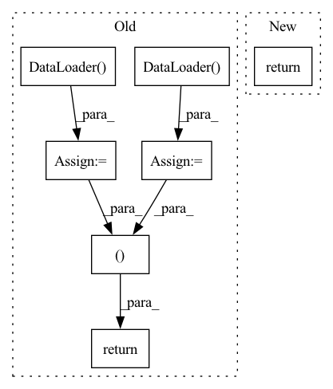

Pattern ID :34083

Before Change
train_sampler = torch.utils.data.distributed.DistributedSampler(
train_dataset, num_replicas=args.backend.size(), rank=args.backend.rank())
train_loader = torch.utils.data.DataLoader(train_dataset,
batch_size=args.batch_size, sampler=train_sampler, **kwargs)
test_sampler = torch.utils.data.distributed.DistributedSampler(
test_dataset, num_replicas=args.backend.size(), rank=args.backend.rank())
test_loader = torch.utils.data.DataLoader(test_dataset,
batch_size=args.val_batch_size, sampler=test_sampler, **kwargs)
return train_sampler, train_loader, test_sampler, test_loader
After Change
download=download, transform=transform_test)
if download: args.backend.barrier()
return make_sampler_and_loader(args, train_dataset, test_dataset)
def get_imagenet(args):
In pattern: SUPERPATTERN
Frequency: 3
Non-data size: 7
Instances
Fragment ID: 97442702
Project Name: gpauloski/kfac_pytorch
Commit Name: 6e077f0545d977e5db70df603d71d2a85712cec7
Time: 2020-06-26
Author: gpauloski@yahoo.com
File Name: examples/cnn_utils/datasets.py
M Class Name: AnonimousClass
N Class Name: AnonimousClass
M Method Name: get_cifar(1)
N Method Name: get_cifar(1)
M Parent Class:
N Parent Class:
M File Name: examples/cnn_utils/datasets.py
N File Name: examples/cnn_utils/datasets.py
M Start Line: 7
M End Line: 40
N Start Line: 18
N End Line: 26
'>
Before Change
trainset = dataset(
root="save/data", train=True, download=True, transform=transform_train,
)
trainloader = data.DataLoader(
trainset, batch_size=batch_size, shuffle=True, num_workers=n_workers,
)
// dataloader for testing
transform_test = getattr(
__import__("src.augmentation.policies", fromlist=[""]), transform_test,
)()
testset = dataset(
root="save/data", train=False, download=False, transform=transform_test,
)
testloader = data.DataLoader(
testset, batch_size=batch_size, shuffle=False, num_workers=n_workers,
)
return trainloader, testloader
def get_latest_file(filepath: str, pattern: str = "*") -> str:
Get the latest file from the input filepath.
After Change
root="save/data", train=False, download=False, transform=transform_test,
)
return trainset, testset
def get_dataloader(
'>
Fragment ID: 97442703
Project Name: j-marple-dev/model_compression
Commit Name: 49fd51c06795b3b7f737f62f7e6df8f9158c8555
Time: 2020-06-30
Author: 44793742+HSShin0@users.noreply.github.com
File Name: src/utils.py
M Class Name: AnonimousClass
N Class Name: AnonimousClass
M Method Name: get_dataset(3)
N Method Name: get_dataset(5)
M Parent Class:
N Parent Class:
M File Name: src/utils.py
N File Name: src/utils.py
M Start Line: 34
M End Line: 66
N Start Line: 74
N End Line: 86
'>
Before Change
trainset_1_inp = ImageDataset(root="./images_LR/input/Training1/", transform=transform)
trainset_2_inp = ImageDataset(root="./images_LR/input/Training2/", transform=transform)
train_loader_1 = torch.utils.data.DataLoader(
ConcatDataset(
trainset_1_gt,
trainset_1_inp
),
batch_size=BATCH_SIZE * GPUS_NUM, // Enlarge batch_size by a factor of len(device_ids)
shuffle=True,
)
train_loader_2 = torch.utils.data.DataLoader(
ConcatDataset(
trainset_2_gt,
trainset_2_inp
),
batch_size=BATCH_SIZE * GPUS_NUM, // Enlarge batch_size by a factor of len(device_ids)
shuffle=True,
)
train_loader_cross = torch.utils.data.DataLoader(
ConcatDataset(
trainset_1_inp,
trainset_2_gt
),
batch_size=BATCH_SIZE * GPUS_NUM, // Enlarge batch_size by a factor of len(device_ids)
shuffle=True,
)
test_loader = torch.utils.data.DataLoader(
ConcatDataset(
testset_inp,
testset_gt
),
batch_size=BATCH_SIZE * GPUS_NUM, // Enlarge batch_size by a factor of len(device_ids)
shuffle=False
)
print("Finished loading dataset")
return train_loader_1, train_loader_2, train_loader_cross, test_loader
After Change
)
print("Finished loading dataset")
return train_loader_cross, test_loader
'>
Fragment ID: 97442708
Project Name: mrrobot2211/pytorch-deep-photo-enhancer
Commit Name: 76112b5310dedd4d99c9338e6166615bccade671
Time: 2020-05-06
Author: felipebihaiek@gmail.com
File Name: libs/compute.py
M Class Name: AnonimousClass
N Class Name: AnonimousClass
M Method Name: data_loader_mask(0)
N Method Name: data_loader_mask(0)
M Parent Class:
N Parent Class:
M File Name: libs/compute.py
N File Name: libs/compute.py
M Start Line: 88
M End Line: 133
N Start Line: 96
N End Line: 116